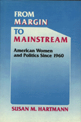

A detailed and comprehensive account of women�s participation in the American political system from 1960 to the present
A detailed and comprehensive account of women�s participation in the American political system from 1960 to the present


 A detailed and comprehensive account of women�s participation in the American political system from 1960 to the present
A detailed and comprehensive account of women�s participation in the American political system from 1960 to the present

|  |
From Margin to MainstreamAmerican Women and Politics Since 1960Susan M. Hartmancloth EAN: 978-0-87722-634-5 (ISBN: 0-87722-634-2) |
From Margin to Mainstream is a detailed and comprehensive account of women�s participation in the American political system from 1960 to the present, Susan M. Hartmann traces the growing role of women in the political process and describes the many issues around which they have mobilized—such as the ERA, the Equal Pay Act, federal child care programs, and the appointment of women to high government posts. She discusses the activities and the leaders of women on both the right and the left of the political spectrum. Throughout her discussion, she examines the differing economic interests and political behavior of women of various racial and socioeconomic groups.
Hartmann chronicles the concerns of women in their struggle to reach the mainstream of American political life: their participation in the grassroots movements of the 1960s; major women�s organizations, such as the National Organization for Women, Women�s Equity Action League, and National Women�s Political Caucus; and women as political candidates and officeholders. This is the most up-to-date book on women�s recent participation in electoral politics and in the shaping of public policy. Its breadth of coverage and substantial bibliographical essay will make it essential reading for anyone involved in the history of women in America.
Susan M. Hartmann is Professor of History and Director of the Center for Women�s Studies at Ohio State University.
© 2015 Temple University. All Rights Reserved. This page: http://www.temple.edu/tempress/titles/679_reg.html.